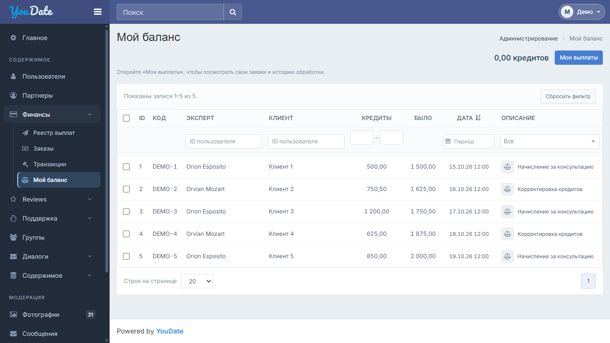
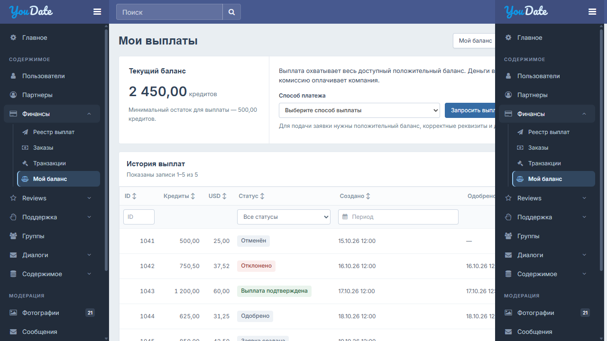

Исправлено r2: возвращён доработанный макет «Мои выплаты» — карточка баланса, форма и история. Отдельную страницу сохраняем: это решение владельца, а не ошибка. Текущие финансовые макеты v9, согласованные заголовки RU/EN и штатные CSS. Общая оболочка сайта сохраняется.
Достаточный баланс · Пустая история · Ошибка запроса


UI-проверка макетов не подтверждает финансовые операции, серверный доступ и физические устройства. В XLSX оставлены поля для факта, сборки и доказательства.
| ID | Экран | Действие | Ожидаемый результат |
|---|---|---|---|
| BAL-UI-01 | Структура | Баланс → Мои выплаты → карточка / реквизиты | Сохранить отдельные страницы и штатные маршруты. Не объединять их и не считать разделение дефектом. |
| BAL-UI-02 | Пять таблиц | RU / EN и hover / Tab / Escape | Короткие согласованные заголовки; Было=баланс до операции, USD=сумма получателю. Полное имя доступно по hover/focus; Escape закрывает подсказку. |
| BAL-UI-03 | Все списки | Фильтр / сортировка / страницы / сброс | Сохранить Yii GridView/PJAX, имена полей, sorting links, события и серверную пагинацию. Новый текст не меняет запросы/права. |
| BAL-UI-04 | Операции | Проверить владельца и порядок | Отдельный владелец кошелька и фильтр по ID;11 столбцов с флажком. Клиент, эксперт, агент и владелец не смешиваются. |
| BAL-UI-05 | Период | Открыть → выбрать → применить → очистить → Escape | Существующий finance-date-filter + form-control + DateRangePicker сайта целиком; один диапазон, штатное применение финансового фильтра, без нового глобального CSS. |
| BAL-UI-06 | Мой баланс | Прочитать баланс и перейти к выплатам | Баланс из существующего authoritative wallet текущего пользователя. Переход открывает его заявки; значения совпадают на обоих экранах. |
| BAL-UI-07 | Реестр выплат | Показать все статусы | ID / Владелец / Кредиты / USD / Статус / Создано / Одобрено / Выплачено / просмотр. Одобрение и фактическая выплата — разные факты. |
| BAL-UI-08 | Мои выплаты | Недостаточно средств / ready / ошибка | Сохранить текущие eligibility, порог, методы и весь доступный остаток. Демо-суммы/порог не переносить как константы. Ошибка не меняет баланс; повторная заявка не дублируется. |
| BAL-UI-09 | Запрос выплаты | Метод → подтверждение → отмена / submit | Один существующий confirm. Отмена без эффекта; backend проверяет доступность метода/остаток, CSRF и идемпотентность. Подтверждение демо не равно production-тесту. |
| BAL-UI-10 | Список → карточка | Открыть ID1041–1045 в preview; реальныеID на сайте | Одинаковые ID, кредиты, USD, статус, даты; история фактическая. Курс, комиссия, получатель и transfer ID только из серверных данных. |
| BAL-UI-11 | Реквизиты | Включить метод без кошелька → ошибка → исправить | Сохранить PayoutDetailsForm, серверную валидацию и CSRF. Секреты/реквизиты в логи не выводить; демо-кошельки на сайт не копировать. |
| BAL-UI-12 | Партнёры | Сравнить исходную страницу | Существующие11 столбцов, Select2, бейджи, действия и CSS сохраняются. Отозванные partner-layout.css / новое окно начисления не внедрять. Новых заголовков партнёров нет. |
| BAL-UI-13 | Таблицы | 1280 /1024 /390 CSS px | Без произвольного min-width1120 и уменьшения шрифта. На узком экране допустима локальная прокрутка таблицы; внешняя страница и общая оболочка не растягиваются. |
| BAL-UI-14 | CSS | До/после в том же viewport | Не редактировать global_custom, theme/vendor, header/logo/sidebar/footer. Недостающие правила отдельным scoped-файлом; financial-adapter сайта не удалять. |
| BAL-UI-15 | Сервер / роли | Чужой wallet/ID, повтор, параллельный запрос, PJAX | Серверный отказ чужому scope; точные суммы и один ledger-эффект. Реальная роль/сборка/данные/факт/доказательство фиксируются отдельно; UI-пакет не закрывает41 live-проверку. |
| BAL-UI-16 | Фикстуры | Reload и пять карточек | Демонстрационные строки детерминированы и не являются реальными балансами. Параметры ready/empty/error работают только в автономном preview. |
В integration — только адресная адаптация; preview/assets, фикстуры и helpers на сайт не переносить. Партнёры не перерабатываются. Цензура и взаимодействия передаются отдельными комплектами.